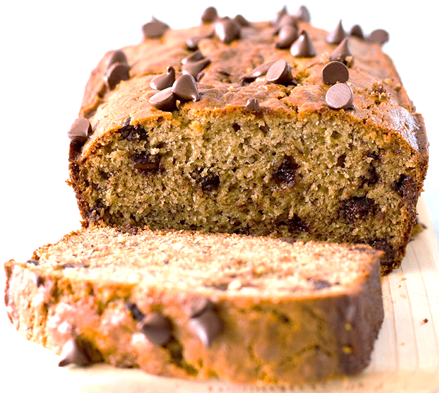

Rhubard & Custard Bake
250g cut rhubarb
257 caster sugar
1tbsp vanilla paste
250g vegan margarnie
2tbsp flaxseed
150g soya custard
250g flour
1tbsp bakking powder
1tbsp vanilla
Instructions
Cook rhubard in over 200c for 15 mins with sugar. Then put flaxseed in water for 5mins. beat together margarine, custard, flour. baking pwder. vanilla. and then add flaxseed. Place mixture in a tin and layer the rhubarb. Place in over for 45mins until golden brown.
Chocolate Chip Bananabread
3 bananas mashed
175g brown sugar
100ml vegetable oil
10ml vanilla extract
1tbsp maple syrup
250g plain flower
Chocolate chips
Instructions
Heat oven and grease loaf tin. Mix together bananas and sugar until creamed together. Add vegetable oil to the mix including vanilla and maple syrup. Sive flour and baking powder until mixed. Then add as many chocolate chips. Pour into your loaf bowl and bake for 45-50mins.
Oatmeal Flapjacks
140g dairy-free spread
140g soft light brown sugar
175g rolled oats
Instructions
Set oven to 160C and add baking parchment into tin. Melt dairy free spread, sugar, syrup together, then add in the oats (or dried fruit and nuts of choice). Add into the tin and then bake into over for 30-35mins until light and golden.
Blueberry Muffins
200ml oat milk
1tbsp apple cider vinegar
300g flain flour
1/2 tbsp salt
105g caster sugar
1 1/4 bicarbonate of soda
2tbsp baking powder
3tbsp poppy seeds
Instructions
Set oven o 200C and grease muffin tin. Mix oat milk and vinegar together. Then sift all dry ingredients in a large bowl and pour the wet ingredients together. Add frozen blueberries and then pour mixture into baking tin. Bake for 25-30mins